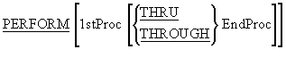
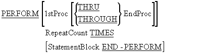
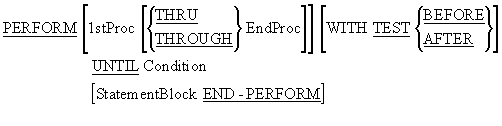
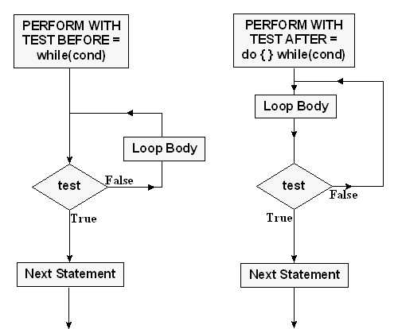
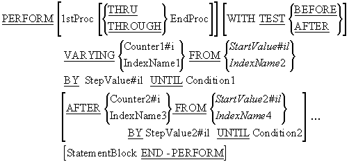

In almost every programming job, there is some task that needs to be done over and over
again. For example: The job of processing a file of records is an iteration of the task
- get and process record. The job of getting the sum of a stream of numbers is an
iteration of the task - get and add number. These jobs are accomplished using iteration
constructs.
Other computer languages support a variety of looping constructs, including Repeat,
While, and For loops. Although COBOL has a set of looping constructs that is just as
rich as other languages - richer in some cases - it only has one iteration verb. In
COBOL, all iteration is handled by the PERFORM verb.
Iteration constructs and their COBOL equivalents
| C |
Modula-2 |
COBOL |
|
do{}while
|
Repeat
|
Perform Until ..With Test After
|
|
while
|
While
|
Perform Until ..With Test Before
|
|
for
|
For
|
Perform ..Varying
|
This tutorial demonstrates how the PERFORM verb
is used to create Repeat loops, While loops and For loops. It will also demonstrate
how the PERFORM is used to transfer control to
an open subroutine.
By the end of this unit you should -
-
Understand how the PERFORM can be used to transfer control to block of code contained in
a paragraph or section..
-
Know how to use the PERFORM..THRU and the GO TO and understand the restrictions placed
on using them.
- Understand the difference between in-line and out-of-line Performs
- Be able to use the PERFORM..TIMES.
-
Understand how the PERFORM..UNTIL works and be able to use it to implement
while or do/repeat loops.
-
Be able to use PERFORM..VARYING to implement counting iteration such as that implemented
in other languages by the for construct.
-
Understand the significance of the order of execution in the PERFORM..VARYING flowchart
If you have written programs in another language, you will probably have come across the
idea of a subroutine; a block of code that is executed, when invoked by name. What you
may not have realized is that there are essentially two types of subroutine.:
Open Subroutines
and
Closed Subroutines
If the language you learned was C or Modula-2, you are probably familiar with closed
subroutines. If you learned BASIC, you may be familiar with open subroutines.
Open subroutines.
An open subroutine., is a named block of code that control can fall into, or through. An
open subroutine., usually has access to all the data-items declared in the main program
and it can't declare any data-items of its own.
Although an open subroutine. is normally executed by invoking it by name, it is also
possible, unless the programmer is careful, to fall into it from the main program. In
BASIC, the GOSUB command allows programmers to implement open subroutines.
Closed subroutines.
A closed subroutine., is a named block of code that can only be executed by invoking it
by name. Usually a closed subroutine. can declare its own local data which cannot be
accessed outside the subroutine. In a closed subroutine., data is usually passed between
the main program and the subroutine. By means of parameters passed to the subroutine.
when it is invoked.
In C and Modula-2, Procedures and Functions implement closed subroutines.
COBOL subroutines.
COBOL supports both open and closed subroutines. Open subroutines, are implemented using
the first format of the PERFORM verb. Closed
subroutines., are implemented using the CALL verb
and contained or external subprograms.

Unless it is otherwise instructed, a computer running a COBOL program processes the
statements of the program in sequence, starting at the top of the program and working
its way down until the STOP RUN is reached. The
PERFORM verb is is one way of altering the
sequential flow of control in a COBOL program. The
PERFORM verb can be used for two major purposes;
- To transfer control to a designated block of code.
- To execute a block of code iteratively.
While the other formats of the PERFORM verb
implement various types of iteration, the format shown here is used to transfer control
to an out-of-line block of code.
The block of code may be one or more paragraphs, or one or more sections.
This format of the PERFORM verb, transfers control
an out-of-line block of code. When the end of the block is reached, control reverts to
the statement (not the sentence) immediately following the
PERFORM.
1stProc and EndProc are the names of paragraphs or sections.
When the PERFORM..THRU is used, the paragraphs or
sections from 1stProc to EndProc are treated a single block of code. COBOL programmers
typically use this format of the PERFORM to divide a
program into open subroutines.
These subroutines are not as robust as the user-defined Procedures or Functions found in
other languages, but when COBOL programmers require that kind of partitioning, they use
contained or external subprograms.
Open subroutines. are useful because they allow a programmer to code a subroutine.
without the formality or overhead involved in coding a Procedure or Function.
PERFORMs may be nested.
That is, a PERFORM may execute a paragraph that contains a
PERFORM which in turn may execute a paragraph
that contains another PERFORM. As control
reaches the end of each paragraph it returns to the statement following the perform
which cause the paragraph to be executed.
Order of execution independent of physical placement
The order of execution of the paragraphs is independent of their physical placement.
So it doesn't matter where in the Procedure Division we put our paragraphs the
PERFORM will find and execute them
Recursion not allowed.
Although Performs can be nested, neither direct nor indirect recursion is allowed.
This means that a paragraph must not contain a
PERFORM that invokes itself or any ancestor
paragraph (parent, grandparent etc). Unfortunately this restriction is not enforced
by the compiler but your program will not work correctly if you use recursive
Performs
This format of the PERFORM verb is used to make programs
more readable and maintainable.
When we can identify a block of code in the program that performs some specific task (e.g.
Prints the report headings) this format allows us to replace the details of
how the task is being accomplished with a name that indicates what is being
done (e.g. PERFORM PrintReportHeadings).
We should use this format of the PERFORM to divide our
programs into a hierarchy of tasks and sub-tasks.
>>SOURCE FORMAT IS FREE
IDENTIFICATION DIVISION.
PROGRAM-ID. PerformFormat1.
AUTHOR. Michael Coughlan.
*> An example program using the Perform verb.
PROCEDURE DIVISION.
TopLevel.
DISPLAY "In TopLevel. Starting to run program"
PERFORM OneLevelDown
DISPLAY "Back in TopLevel.".
STOP RUN.
TwoLevelsDown.
DISPLAY ">>>>>>>> Now in TwoLevelsDown."
PERFORM ThreeLevelsDown.
DISPLAY ">>>>>>>> Back in TwoLevelsDown.".
OneLevelDown.
DISPLAY ">>>> Now in OneLevelDown"
PERFORM TwoLevelsDown
DISPLAY ">>>> Back in OneLevelDown".
ThreeLevelsDown.
DISPLAY ">>>>>>>>>>>> Now in ThreeLevelsDown".
Now that you understand how this version of the
PERFORM works, test your understanding by referring
to the example program above and answering the following questions.
Q1
Write out what the example program above will display on the screen.
Click the arrow for the answer
In TopLevel. Starting to run program
>>>> Now in OneLevelDown
>>>>>>>> Now in TwoLevelsDown.
>>>>>>>>>>>> Now in ThreeLevelsDown
>>>>>>>> Back in TwoLevelsDown.
>>>> Back in OneLevelDown
Back in TopLevel.
Q2
Taking your pen in hand once more, write out what the program will display if
the STOP RUN is missing.
Click the arrow for the answer
With the STOP RUN missing control falls
through the paragraphs
In TopLevel. Starting to run program
>>>> Now in OneLevelDown
>>>>>>>> Now in TwoLevelsDown.
>>>>>>>>>>>> Now in ThreeLevelsDown
>>>>>>>> Back in TwoLevelsDown.
>>>> Back in OneLevelDown
Back in TopLevel.
>>>>>>>> Now in TwoLevelsDown.
>>>>>>>>>>>> Now in ThreeLevelsDown
>>>>>>>> Back in TwoLevelsDown.
>>>> Now in OneLevelDown
>>>>>>>> Now in TwoLevelsDown.
>>>>>>>>>>>> Now in ThreeLevelsDown
>>>>>>>> Back in TwoLevelsDown.
>>>> Back in OneLevelDown
>>>>>>>>>>>> Now in ThreeLevelsDown
Q3
Is it valid to insert the statement
PERFORM
ThreeLevelsDown into the paragraph ThreeLevelsDown?
Click the arrow for the answer
No! This is not valid in standard COBOL. This is recursion. In standard
COBOL, if ThreeLevelsDown is performed from another paragraph the
recursive perform will cause it to lose the return address that
paragraph and control will not be able to return to it.
Q4
Is it valid to have the statement
PERFORM TwoLevelsDown in the
paragraph ThreeLevelsDown?
Click the arrow for the answer
No. This is indirect recursion since TwoLevelsDown contains the
statement PERFORM ThreeLevelsDown.
Although the PERFORM..THRU has dangers, as outlined
above, it can be a useful construct for dealing with errors. Sometimes we need to stop
executing a paragraph if an error is detected. The
PERFORM..THRU provides a mechanism which allows us to do
this.
In the program fragment below, the programmer does not want to execute the remaining
statements in the paragraph if an error is detected. The solution he has adopted, based on
nested
IF statements, is somewhat cumbersome.
PROCEDURE DIVISION.
Begin.
PERFORM SumSales
STOP RUN.
SumSales.
Statements
Statements
IF NoErrorFound
Statements
Statements
IF NoErrorFound
Statements
Statements
Statements
IF NoErrorFound
Statements
Statements
Statements
Statements
END-IF
END-IF
END-IF.
In the program fragment below, the PERFORM..THRU is used
to deal with detected errors in a more elegant manner.
When the statement PERFORM SumSales
THRU SumSalesExit is executed, both paragraphs will be
performed as if they were one paragraph. The GO TO jumps
to the exit paragraph which, because the paragraphs are treated as one, is the end of the
block of code. This technique allows the programmer to skip over the code he does not want
executed if an error is detected.
The EXIT statement in the SumSalesExit paragraph is a
dummy statement. It has absolutely no effect on the flow of control. It is in the paragraph
merely to conform to the rule that every paragraph must contain at least one sentence and in
fact it must be the only sentence in the paragraph. It may be regarded as a comment.
PROCEDURE DIVISION
Begin.
PERFORM SumSales THRU SumSalesExit
STOP RUN.
SumSales.
Statements
Statements
IF ErrorFound GO TO SumSalesExit
END-IF
Statements
Statements
IF ErrorFound GO TO SumSalesExit
END-IF
Statements
Statements
Statements
IF ErrorFound GO TO SumSalesExit
END-IF
Statements
Statements
Statements
Statements
SumSalesExit.
EXIT.
The PERFORM..THRU and
GO TO are dangerous constructs which, if used unwisely,
will make your programs very difficult to read, understand and maintain. Because of this,
the PERFORM..THRU should only be used to set up a
paragraph exit as in the example above and it should only cover two paragraphs. No other use
of the PERFORM..THRU is acceptable.
This is also the only time the GO TO should be used.
The PERFORM..TIMES format has no real equivalent in most
programming languages. This format allows a block of code to be executed a specified number
of times.

This format of the PERFORM executes a block of code RepeatCount number of times before
returning control to the statement following the PERFORM.
Like the remaining formats of the PERFORM, this format allow two types of execution.
- Out-of-line execution of a block of code
- In-line execution of a block of code.
In-line execution
In-line execution will be familiar to programmers who have used the iteration constructs
(while,do/repeat, for) of most other programming languages. In an in-line
PERFORM, the block of code to be iteratively executed is
contained within the same paragraph as the PERFORM. That
is, the loop body is in-line with the rest of the paragraph code.
The block of code to be executed starts at the keyword
PERFORM and ends at the keyword
END-PERFORM (see example program below).
Out-of-line execution
In an out-of-line PERFORM the loop body is a separate paragraph or section. It is the
equivalent of having a Procedure or Function call inside the loop body of a while or for
construct.
Some guidelines
In general, where a loop is needed but only a few statements are involved, an in-line
PERFORM should be used.
Where out-of-line code is executed by a format 1
PERFORM, the code should perform some specific function
and that function should be identified by the paragraph name chosen.
Where an out-of-line paragraph consists of 5 statements or less, there should be a good
reason for placing these statements in a separate paragraph.
Programmers should try to achieve a balance between in-line and out-of-line code. The
program should not be too fragmented, nor too monolithic.
>>SOURCE FORMAT IS FREE
IDENTIFICATION DIVISION.
PROGRAM-ID. InLineVsOutOfLine.
AUTHOR. Michael Coughlan.
*> An example program demonstrating
*> in-line and out-of-line Performs.
DATA DIVISION.
WORKING-STORAGE SECTION.
01 NumOfTimes PIC 9 VALUE 5.
PROCEDURE DIVISION.
Begin.
DISPLAY "Starting to run program"
PERFORM 3 TIMES
DISPLAY ">>>>This is an in line Perform"
END-PERFORM
DISPLAY "Finished in line Perform"
PERFORM OutOfLineEG NumOfTimes TIMES
DISPLAY "Back in Begin. About to Stop".
STOP RUN.
OutOfLineEG.
DISPLAY ">>>> This is an out of line Perform".
Examine the program above and write out what it will display on the screen.
Click the arrow for the answer
Starting to run program
>>>>This is an in line Perform
>>>>This is an in line Perform
>>>>This is an in line Perform
Finished in line Perform
>>>> This is an out of line Perform
>>>> This is an out of line Perform
>>>> This is an out of line Perform
>>>> This is an out of line Perform
>>>> This is an out of line Perform
Back in Begin. About to stop
This format of the PERFORM is used where the
while and do/repeat constructs are used in other languages. It causes a block
of code to be iteratively executed until some terminating condition is reached.

Notes
If the WITH TEST BEFORE phrase is used, the
PERFORM behaves like a while loop and the
condition is tested before the loop body is entered.
The WITH TEST AFTER phrase causes the
PERFORM to act do/repeat loop and the condition
is tested after the loop body is entered.
The WITH TEST BEFORE phrase is the default and so is
rarely explicitly stated.
The flowcharts below show how the PERFORM..UNTIL works.
As you can see the terminating condition is only checked at the beginning of each iteration
(PERFORM WITH TEST BEFORE) or at the end of each
iteration (PERFORM WITH TEST AFTER).
The terminating condition is only checked at the beginning of each iteration (PERFORM WITH TEST BEFORE) or at the end of each iteration (PERFORM WITH TEST AFTER). If the terminating condition is reached in the middle of the iteration, the rest of the
loop body will still be executed; although the terminating condition has been reached, it
cannot be checked until the current iteration has finished.
Although the PERFORM WITH TEST BEFORE is often said to
be equivalent to a while loop, this is not entirely true. In a while loop, the
condition is tested to see whether the iteration should continue (for example, while(Letter
!= 's') ) but in a PERFORM, the condition is tested to
see if the iteration should stop (For example,
PERFORM WITH TEST BEFORE UNTIL Letter = "s") .

Beginning programmers often ask; when should they use the
WITH TEST BEFORE loop, and when should they use the
WITH TEST AFTER.
There really isn't a cookbook answer to this. It's a matter of experience. But we can
identify some circumstances, when it is better to use the WITH TEST BEFORE, than the
WITH TEST AFTER.
When you need to process a stream of data items, and don't know the size of the stream, and
can't detect the end of the stream until you attempt to retrieve the next item, then a
test before loop, is the best construct to use.
If the end of the stream can be detected when the last item is retrieved, then the
appropriate construct is probably a test after loop.
Processing a stream of data items of undetermined length, is a common operation in COBOL,
because sequential files fall into this category. A useful strategy known as the "read
ahead" has been developed for processing sequential files.
The central idea of the "read ahead" is that, because the end of the file cannot be detected
until an attempt is made to read a record, the Read must be positioned as the last statement
in the record processing loop.
You can see how this works in the processing template below. With the "read ahead" strategy
we always try to stay one data item ahead of the processing. So the Read outside the loop,
reads the first record and this record is processed inside the loop. The Read inside the
loop, reads the next, and all the succeeding records. When the inside Read detects the end
of file, it sets a Condition Name that immediately causes the loop to halt.
READ StudentRecords
AT END SET EndOfStudentFile TO TRUE
END-READ
PERFORM WITH TEST BEFORE UNTIL EndOfStudentFile
record processing
record processing
record processing
READ StudentRecords
AT END SET EndOfStudentFile TO TRUE
END-READ
END-PERFORM
This approach to processing a sequential file has two main advantages.
-
Because the read outside the loop reads the first record, the loop is never entered if
the file is empty.
-
Because the Read is the last statement in the loop, the loop can be halted as soon as
the end of file is detected.
The primary concern of a programmer who creates a loop should be - will the loop terminate.
Much of the work of proofs of program correctness goes into proving that the loops in a
program are going to terminate. It seems curious then, that in most programming languages
the loop condition concentrates on, not whether the loop will end, but on whether the loop
will keep going. COBOL is one of the few languages that gets this right. In COBOL, the loop
body is executed
until the terminating condition is reached.
The PERFORM..VARYING is used to implement counting iteration. It is similar to the For
construct in languages like Modula-2, Pascal and C. However, these languages permit only one
counting variable per loop instruction, while COBOL allows up to three.
Why three? Earlier versions of COBOL only allowed tables with a maximum of three dimensions,
and the PERFORM..VARYING was a mechanism for processing them.

Notes
The AFTER phrase cannot be used in an in-line
PERFORM. This means that only one counter may be used
with an in-line PERFORM.
The item after the VARYING phrase is the most
significant counter, the counter following the first
AFTER phrase is the next most significant, and the last
counter is the least significant.
The least significant counter must go though all its values and reach its terminating
condition before the next most significant counter can be incremented.
The item after the FROM, is the starting value of the counter.
The item after the BY, is the step value of the counter. This can be negative or positive.
If a negative step value is used, the counter should be signed (PIC S99, etc.).
When the iteration ends, the counters retain their terminating values.
As before, when no WITH TEST phrase is used, the
WITH TEST BEFORE is assumed.
Though the condition would normally involve some evaluation of the counter, it is not
mandatory. For instance, the statement that follows is perfectly valid:
PERFORM CountRecords
VARYING RecCount FROM 1 BY 1 UNTIL EndOfFile
The example animation below demonstrates how a simple PERFORM..VARYING, using only one
counter, work. Pay particular attention to when the counter is incremented. In the example
note that the condition
Idx1 = 3 results in only two passes through the loop body.

This example animation demonstrates how a PERFORM..VARYING, with two counters, works.
Note how the counter Idx2 must go through all its values and reach its terminating value
before the Idx1 counter is incremented. An easy way to think about this is to think of it as
a mileage counter. In a mileage counter, the units counter must go through all its values
0-9 before the tens counter is incremented, and the tens counter must go through all its
values before the hundreds counter is increment.
Note that the first counter mentioned in the PERFORM is the most significant and the next is
the next most significant etc.
In the example program simulates the mileage counter mentioned above. Examine this program
an then attempt to answer the Self Assessment Question which follow.
>>SOURCE FORMAT IS FREE
IDENTIFICATION DIVISION.
PROGRAM-ID. MileageCounter.
AUTHOR. Michael Coughlan.
*> Simulates a mileage counter
DATA DIVISION.
WORKING-STORAGE SECTION.
01 Counters.
02 HundredsCnt PIC 99 VALUE ZEROS.
02 TensCnt PIC 99 VALUE ZEROS.
02 UnitsCnt PIC 99 VALUE ZEROS.
01 DisplayItems.
02 PrnHunds PIC 9.
02 PrnTens PIC 9.
02 PrnUnits PIC 9.
PROCEDURE DIVISION.
Begin.
DISPLAY "Using an out-of-line Perform".
DISPLAY "About to start mileage counter simulation".
PERFORM CountMileage
VARYING HundredsCnt FROM 0 BY 1 UNTIL HundredsCnt > 9
AFTER TensCnt FROM 0 BY 1 UNTIL TensCnt > 9
AFTER UnitsCnt FROM 0 BY 1 UNTIL UnitsCnt > 9
DISPLAY "End of mileage counter simulation."
DISPLAY "Now using in-line Performs"
DISPLAY "About to start mileage counter simulation".
PERFORM VARYING HundredsCnt FROM 0 BY 1 UNTIL HundredsCnt > 9
PERFORM VARYING TensCnt FROM 0 BY 1 UNTIL TensCnt > 9
PERFORM VARYING UnitsCnt FROM 0 BY 1 UNTIL UnitsCnt > 9
MOVE HundredsCnt TO PrnHunds
MOVE TensCnt TO PrnTens
MOVE UnitsCnt TO PrnUnits
DISPLAY PrnHunds "-" PrnTens "-" PrnUnits
END-PERFORM
END-PERFORM
END-PERFORM.
DISPLAY "End of mileage counter simulation."
STOP RUN.
CountMileage.
MOVE HundredsCnt TO PrnHunds
MOVE TensCnt TO PrnTens
MOVE UnitsCnt TO PrnUnits
DISPLAY PrnHunds "-" PrnTens "-" PrnUnits.
Q1
Why is > 9 used in all the terminating conditions?.
Click the arrow for the answer
If = 9 were used, control would never enter the loop body to display any 9's
because the condition is tested before the loop body is entered.
Q2
Why are the counters all declared as PIC 99.
Surely the size of each counter should only be one digit?
Click the arrow for the answer
Consider what happens just after UnitsCnt displays the value 9 in the loop
body. As control exits the loop the counter is incremented making it =10. If
UnitsCnt had been been defined as PIC 9, there would not be enough room for
the 2 digits in 10 and the most significant digit would be truncated,
leaving the 0. When UnitsCnt was tested by the condition it would be found
to contain a 0 and the program would continue to loop interminably.
Q3
In the in-line PERFORM why are there three
separate Performs?
Click the arrow for the answer
The AFTER phrase can not be used in an in-line PERFORM. So we have to use
nested Performs to increment the other counters just as you would in C or
Modula-2.